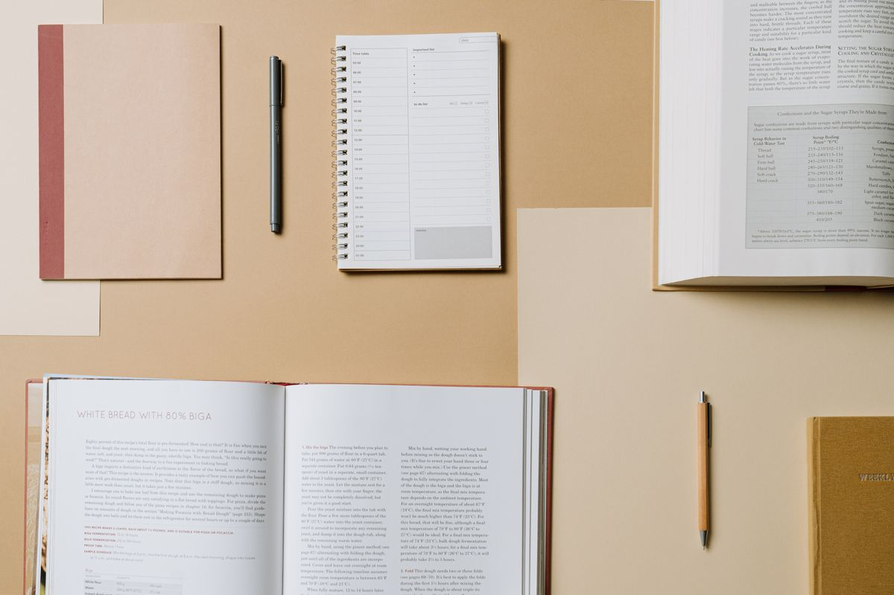

28,9%
dos estudantes brasileiros de 13 a 17 anos relataram sentir tristeza na maioria das vezes ou sempre nos 30 dias anteriores à pesquisa.
IBGE — PeNSE 2024Saúde mental também faz parte da vida escolar
O Clear Minds é um espaço criado para ajudar estudantes a compreender, cuidar e falar sobre sua saúde mental, aproximando informação, autocuidado, comunidade e profissionais.
Informação, acolhimento e acesso ao cuidado podem começar com um pequeno passo.

Um passo de cada vez
Por que falar sobre isso?
A adolescência é uma fase de mudanças, descobertas e desafios. Por isso, falar sobre saúde mental não significa apenas tratar problemas: significa também criar condições para reconhecer sentimentos, desenvolver estratégias de cuidado e saber quando buscar ajuda.
Um retrato que merece atenção
Pesquisas ajudam a compreender desafios vividos por adolescentes e a importância de criar espaços de informação, cuidado e apoio.
28,9%
dos estudantes brasileiros de 13 a 17 anos relataram sentir tristeza na maioria das vezes ou sempre nos 30 dias anteriores à pesquisa.
IBGE — PeNSE 202449,7%
relataram preocupação com coisas comuns do dia a dia na maioria das vezes ou sempre.
IBGE — PeNSE 20241 em 7
adolescentes de 10 a 19 anos vivenciam alguma condição de saúde mental no mundo.
OMS — 2025Os dados descrevem resultados de pesquisas populacionais; não servem para avaliar ou diagnosticar uma pessoa.
Entender para cuidar
Bem-estar envolve diferentes aspectos da vida. Conhecê-los pode ajudar a perceber necessidades e buscar apoio, sem transformar experiências comuns em diagnósticos.
Preocupação e ansiedade fazem parte da experiência humana. Quando passam a interferir muito na rotina, nas relações ou nos estudos, pode ser importante conversar com alguém de confiança ou buscar orientação profissional.
Hábitos de sono saudáveis ajudam no bem-estar e na rotina escolar. Ter horários mais regulares e momentos de descanso pode contribuir para uma rotina mais equilibrada.
Reconhecer e nomear emoções pode ajudar a entender o que estamos vivendo e a comunicar o que precisamos, sem julgar o que sentimos.
Amizades, apoio, respeito e limites são parte importante do cotidiano. Relações saudáveis permitem diálogo e consideração mútua.
Pressão, estudos, expectativas e uma rotina cheia podem pesar. Organizar prioridades, fazer pausas possíveis e pedir ajuda são caminhos que podem apoiar o bem-estar.
A OMS destaca sono saudável, atividade física, habilidades de enfrentamento e resolução de problemas, relações interpessoais e gestão das emoções como fatores relacionados ao bem-estar na adolescência. Saiba mais na OMS ↗
O que é o Clear Minds?
O Clear Minds foi desenvolvido pensando na realidade dos estudantes do ensino médio e na necessidade de tornar informações, ferramentas de autocuidado, apoio social e acesso a profissionais mais próximos da rotina escolar. A proposta reúne Informação + Autoconhecimento + Comunidade + Apoio.
Conteúdos para conhecer temas de saúde mental com linguagem acessível e fontes confiáveis.
Ferramentas de reflexão para observar pensamentos, sentimentos e experiências.
Um ambiente para compartilhar experiências e interagir com respeito.
Caminhos para conhecer profissionais e informações sobre possibilidades de atendimento.
A plataforma é um recurso de informação e apoio; não oferece diagnóstico nem substitui acompanhamento profissional.
O que você encontra
Recursos para explorar no seu ritmo, em diferentes momentos da jornada.
Informações sobre autocuidado, ansiedade, sono, emoções, amizades e saúde mental.
Um espaço privado para registrar pensamentos, sentimentos e experiências.
Um ambiente para compartilhar experiências e interagir com outros usuários.
Conheça profissionais e acesse informações sobre possibilidades de atendimento.
Encontre profissionais de saúde mental próximos à sua região.
Receba notificações e acompanhe interações importantes dentro da plataforma.
Cuidar também é se conhecer
Temas informativos para despertar curiosidade e apoiar conversas sobre bem-estar.
Os materiais têm finalidade informativa e educativa; não substituem orientação ou tratamento de saúde.
Encontre profissionais próximos
Nem todo momento difícil precisa ser enfrentado sozinho. O Clear Minds busca facilitar o acesso a informações sobre profissionais e serviços de saúde mental, ajudando o estudante a encontrar caminhos de cuidado.
Explorar localização Entre na sua conta para acessar a área de localização.Comunidade
A comunidade do Clear Minds é pensada como um espaço de convivência para compartilhar experiências, conversar e ouvir com respeito. A interação entre usuários não substitui atendimento profissional.
Privacidade e segurança
Privacidade também depende de escolhas informadas. Conheça os controles disponíveis e pense com cuidado antes de compartilhar informações pessoais.
Ajuste quem pode ver seu perfil e quem pode interagir com você. Suas escolhas definem o que é compartilhado.
O aplicativo permite sinalizar publicações e comentários para avaliação.
Evite publicar dados que identifiquem você ou outras pessoas e proteja o acesso ao dispositivo que utiliza.
Neste estágio, os dados de conta e atividades do aplicativo ficam armazenados no navegador utilizado. O Clear Minds ainda não oferece sincronização centralizada nem pode garantir a remoção remota de cópias locais. Consulte as informações de privacidade da plataforma antes de inserir dados pessoais.
Como funciona?
Cadastre-se como estudante ou profissional.
Acesse sua área e encontre os recursos disponíveis.
Leia conteúdos, registre pensamentos, participe da comunidade e encontre profissionais.
Utilize as ferramentas do Clear Minds como apoio à sua jornada de autocuidado.
Transparência e informação
As referências abaixo fundamentam os dados e as informações gerais apresentados nesta página.